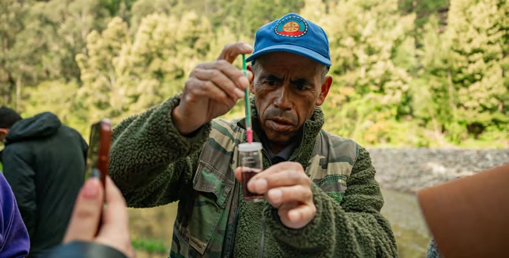

01ANÁLISIS EN TERRENO
Monitoreo fisicoquímico
Observa propiedades del agua mediante procedimientos de campo. El kit descrito en la memoria registra oxígeno disuelto, dureza total, alcalinidad, pH, temperatura y turbidez.
6 parámetros contemplados por el kit descrito en 2024